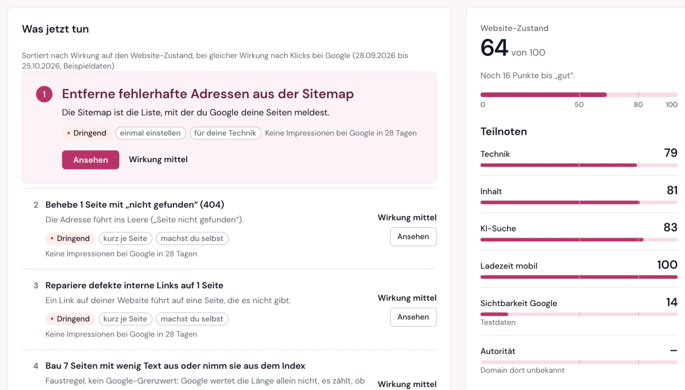
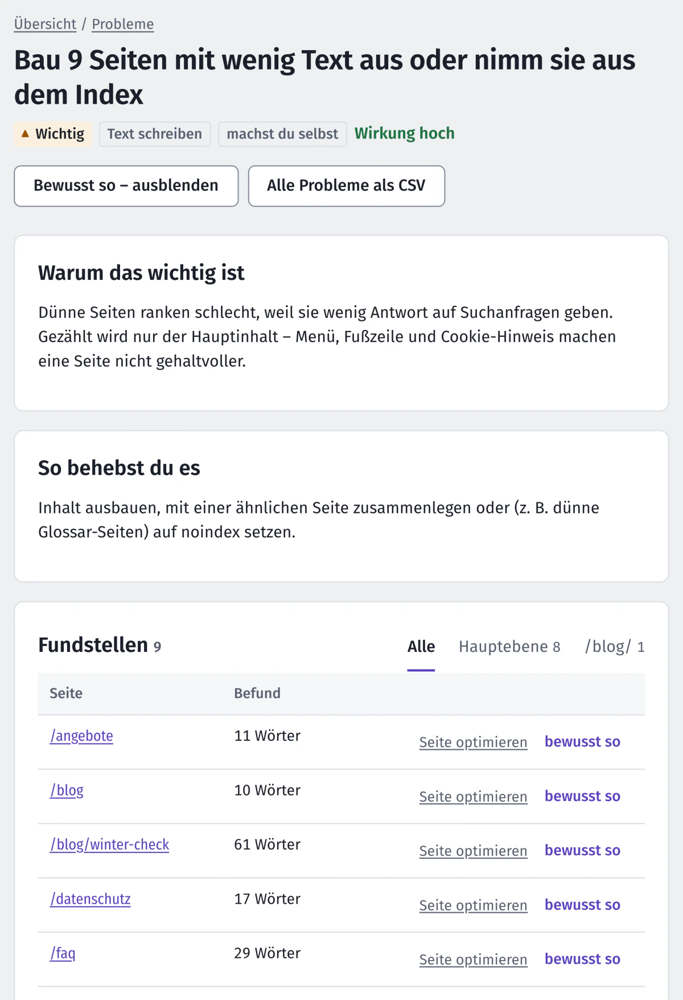
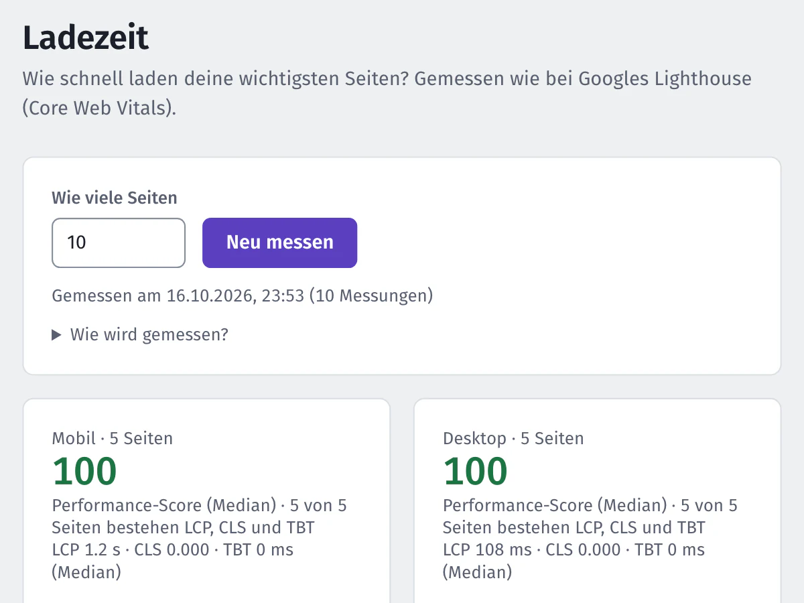
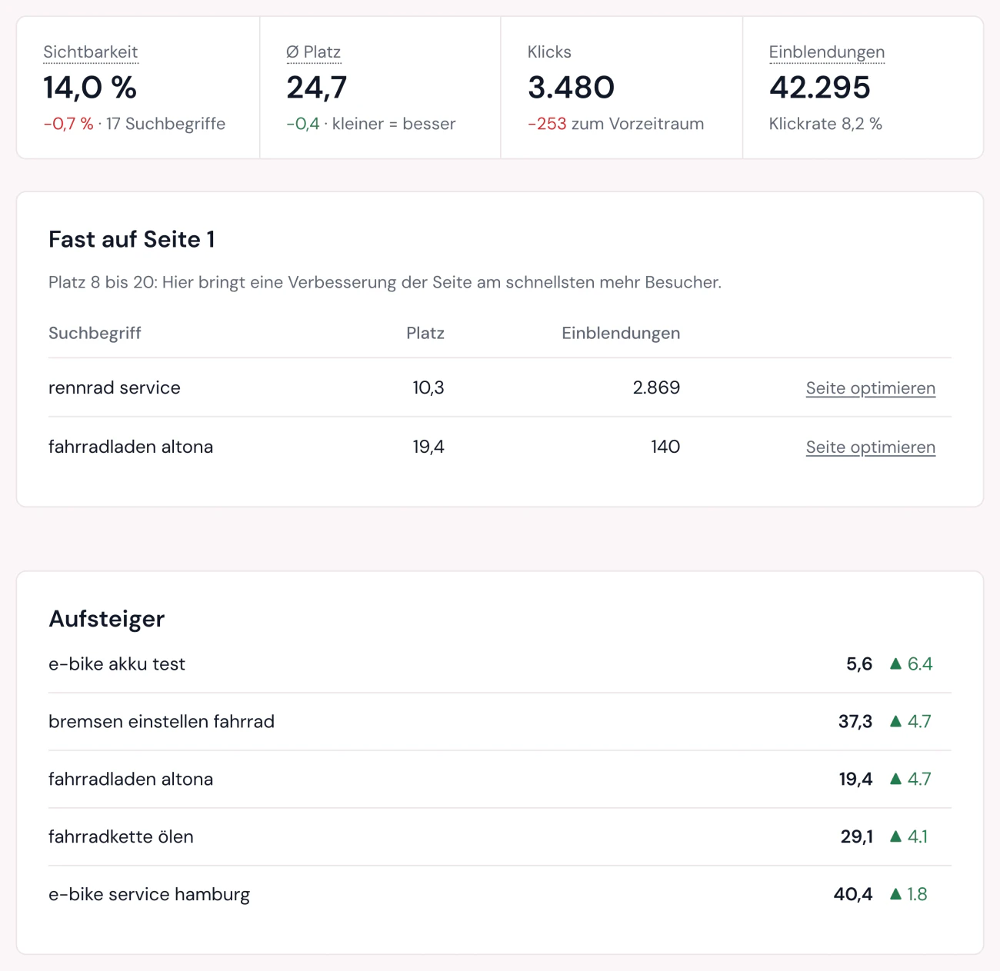
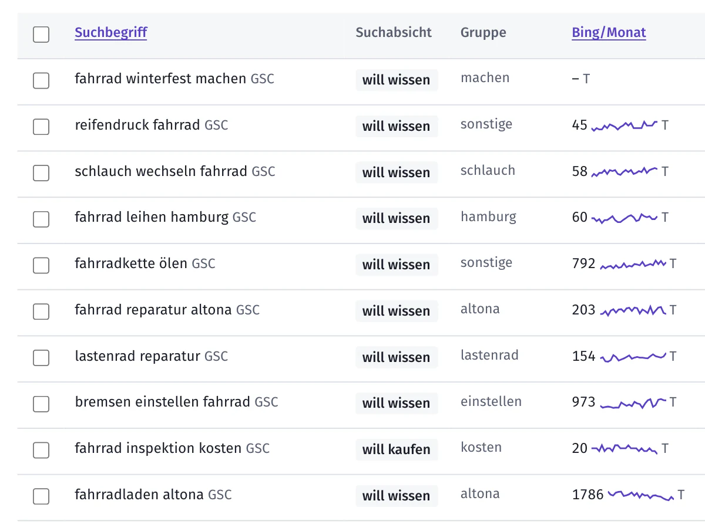
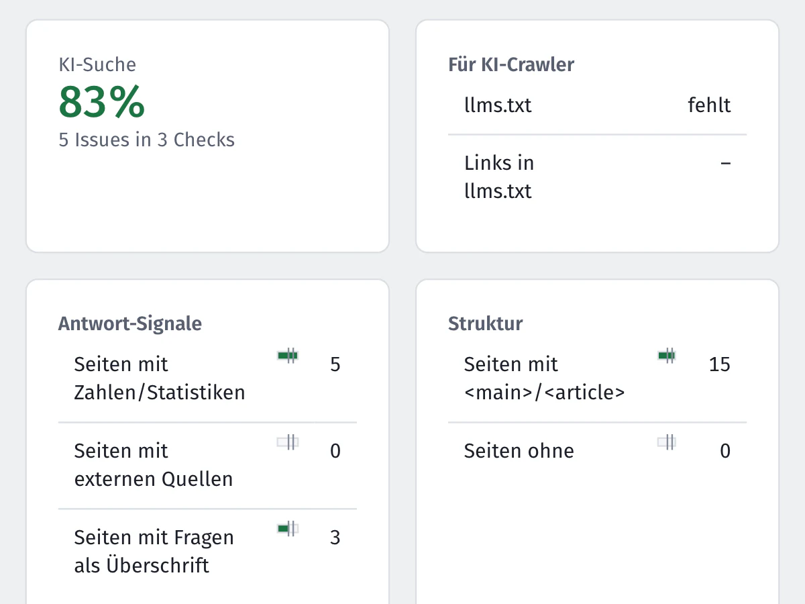
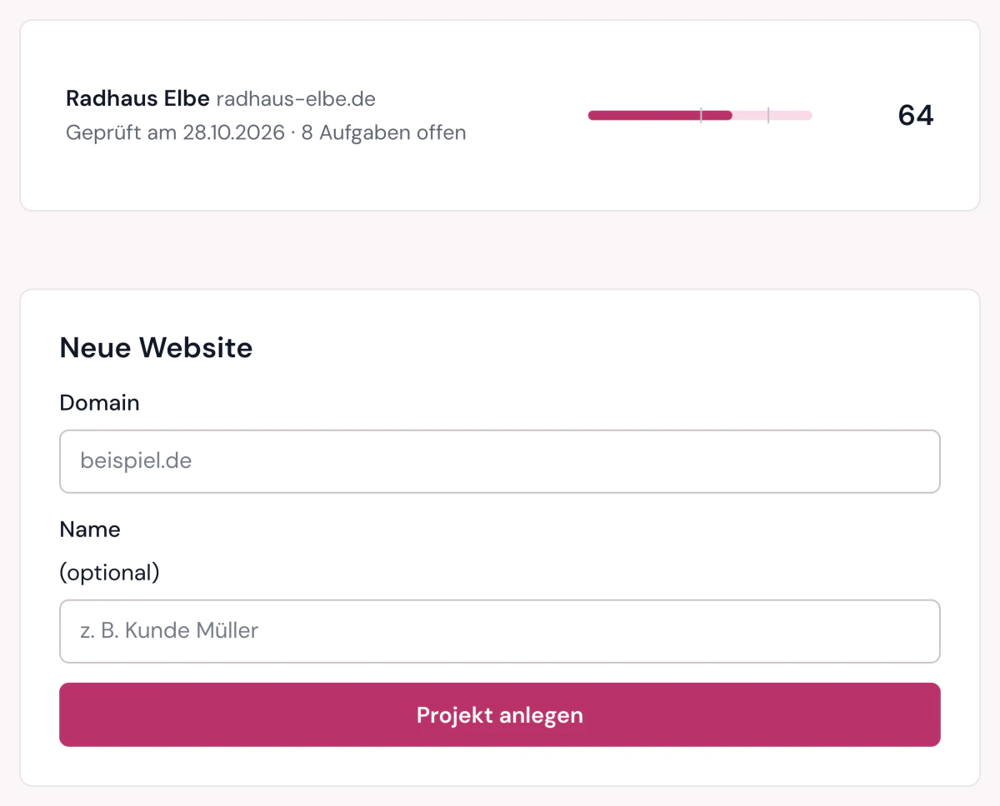
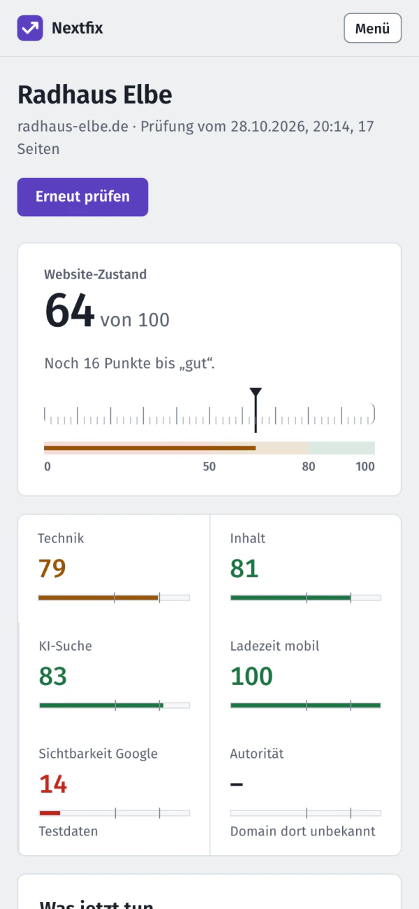

Was Nextfix prüft und misst
Sechs Funktionen in einem Programm. Alle enden bei derselben Frage: Was tust du als Nächstes?

Website-Check
Der Crawler geht deine Website Seite für Seite durch, über Links, über die Sitemap oder beides, und hält sich standardmäßig an deine robots.txt. Danach laufen 106 Prüfungen. Heraus kommen eine Zahl für den Website-Zustand von 0 bis 100 und die Liste „Was jetzt tun“.
Jede Aufgabe trägt eine Wirkung (hoch, mittel, gering), den Aufwand (einmal einstellen, kurz je Seite, Text schreiben) und wer sie erledigt: du selbst im CMS oder deine Technik. Eine Punktzahl je Aufgabe gibt es bewusst nicht. Niemand kann vorhersagen, was eine Behebung beim Ranking bringt.

Acht Bereiche
Die 106 Prüfungen verteilen sich auf acht Bereiche. Jeder gefundene Fehler zählt voll, und ein Fehler auf vielen Seiten wiegt schwerer als einer auf einer einzelnen Seite. So zeigt der Website-Zustand, wie viel wirklich zu tun ist.
Absichtliche Fälle, etwa eine Login-Seite ohne Text, markierst du als „Bewusst so“. Sie zählen dann nicht mehr.
| Bereich | Prüfungen |
|---|---|
| Crawlbarkeit | 19 |
| Technik und Markup | 16 |
| Inhalt und Meta-Angaben | 15 |
| Interne Verlinkung | 14 |
| KI-Suche | 13 |
| Performance | 12 |
| HTTPS | 10 |
| Internationales SEO | 7 |
Jedes Problem erklärt
Klick auf eine Aufgabe und du siehst, warum sie zählt, wie du sie behebst und welche Seiten betroffen sind, gruppiert nach Bereichen deiner Website. Dazu ein Verlauf zwischen den Prüfungen, eine CSV-Liste und ein PDF-Bericht zum Weitergeben.

Ladezeit
Nextfix misst die Core Web Vitals mit einem echten Chromium-Browser, mobil und am Desktop: wann der Hauptinhalt steht (LCP), ob das Layout springt (CLS) und wie lange die Seite blockiert (TBT). Bewertet wird nach der Formel von Lighthouse.
Schlechte Werte fließen in den Website-Zustand ein. Auf Wunsch misst Nextfix nach jeder Prüfung automatisch. Es ist eine Labormessung auf deinem Rechner, keine Daten echter Besucher.

Positionen
Wo wirst du gefunden, wo verlierst du Plätze? Nextfix holt die Daten aus der Google Search Console und den Bing Webmaster Tools, den Quellen, die du als Website-Betreiber ohnehin kostenlos bekommst.
- Sichtbarkeit, durchschnittlicher Platz, Klicks
- Aufsteiger und Absteiger
- „Fast auf Seite 1“: Suchbegriffe auf Platz 8 bis 20
- Seiten, die sich gegenseitig Konkurrenz machen
- täglicher Import
Google-Ergebnisse fragt Nextfix nicht selbst ab. Das verbieten die Nutzungsbedingungen.

Suchbegriffe finden
Worüber lohnt es sich zu schreiben? Nextfix sammelt Ideen aus den Google-Vorschlägen beim Tippen und aus deinen eigenen Search-Console-Daten, fasst ähnliche Begriffe zu Gruppen zusammen, erkennt die Absicht hinter einer Suche und zeigt die Fragen, die Leute stellen.
Das Suchvolumen kommt von Bing. Gibst du Mitbewerber an, siehst du Themen, die sie abdecken und du noch nicht.

Seite optimieren
Gib eine Seite und einen Suchbegriff ein. Nextfix prüft sie nach 20 Regeln, vom Seitentitel über Zwischenüberschriften bis zu internen Links, und gibt einen Seiten-Score.
Dazu kommt ein KI-Score mit 12 Regeln: wie gut ChatGPT, Perplexity und ähnliche Dienste die Seite zitieren können. Oben stehen immer „Zuerst diese 3“, mit einem fertigen Vorschlag zum Kopieren.

KI-Suche und Autorität
Immer mehr Leute fragen eine KI statt einer Suchmaschine. Nextfix prüft, ob deine Website dafür taugt: llms.txt, gesperrte KI-Crawler, Zahlen und Quellen im Text, FAQ-Markup, Autor und Datum bei Artikeln. Grundlage ist die GEO-Studie der Princeton University (KDD 2024).
Wie stark deine Domain im Vergleich zur Konkurrenz ist, zeigt der Wert von Open PageRank (0 bis 10). Den Schlüssel dafür gibt es kostenlos.

Mehrere Websites, auch per Claude
Lege so viele Websites an, wie du willst, und sieh ihren Zustand auf einen Blick. Die Oberfläche passt sich auch an schmale Fenster an.
Wer mit Claude arbeitet, kann Nextfix komplett per Chat bedienen: 51 Werkzeuge über MCP, von „Prüfung starten“ bis „PDF-Bericht“. Oberfläche, Schnittstelle und Claude nutzen dieselben Funktionen.


Was Nextfix nicht kann
- Keine Positionen deiner Konkurrenz und keine einzelnen Backlinks. Dafür bräuchte es bezahlte Datenbanken.
- Ladezeit nur im Labor, nicht von echten Besuchern.
- Ohne eingeschaltetes JavaScript-Rendering sieht der Crawler keine Inhalte, die erst per JavaScript entstehen. Nextfix weist dich darauf hin, wenn deine Seite danach aussieht.